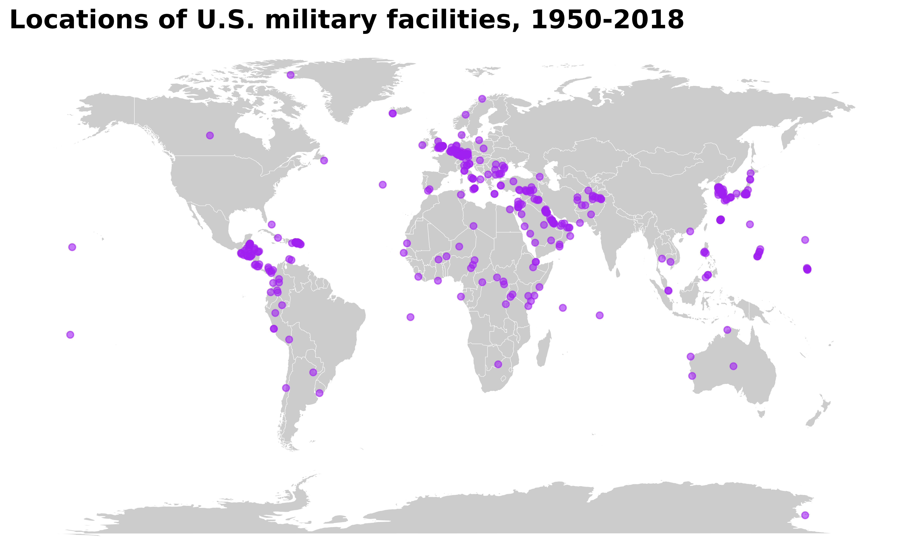

This page provides an overview for the get_basedata()
function, highlighting some of its potential uses.
First things first—let’s load the troopdata package
library(troopdata)
library(ggplot2)
library(dplyr)
#>
#> Attaching package: 'dplyr'
#> The following objects are masked from 'package:stats':
#>
#> filter, lag
#> The following objects are masked from 'package:base':
#>
#> intersect, setdiff, setequal, unionThe troopdata package provides multiple functions to generate
customizable datasets containing information on US military deployments
and accompanying data. The get_basedata() function
represents the core of this package, providing customized data on US
overseas troop deployments, specifically.
Basic Use
The second function, get_basedata() returns a data frame
containing information on the United States’ overseas military bases
going back to the beginning of the Cold War. At its most basic the
function will return a data frame containing country-base observations,
along with the facility’s longitude and latitude (if available), and a
series of binary variables indicating whether or not the facility is a
full military base, a smaller lilypad, and if it is a currently funded
site.
baseexample <- get_basedata(host = NA, country_count = FALSE)
head(baseexample)
#> # A tibble: 6 × 9
#> countryname ccode iso3c basename lat lon base lilypad fundedsite
#> <chr> <dbl> <chr> <chr> <dbl> <dbl> <dbl> <dbl> <dbl>
#> 1 Afghanistan 700 AFG Bagram AB 34.9 69.3 1 0 0
#> 2 Afghanistan 700 AFG Kandahar Airfield 31.5 65.8 1 0 0
#> 3 Afghanistan 700 AFG Mazar-e-Sharif 36.7 67.2 1 0 0
#> 4 Afghanistan 700 AFG Gardez 33.6 69.2 1 0 0
#> 5 Afghanistan 700 AFG Kabul 34.5 69.2 1 0 0
#> 6 Afghanistan 700 AFG Herat 34.3 62.2 1 0 0As with the get_troopdata() function you can specify a
numeric vector of COW country codes or a character vector of ISO3C codes
to specify specific host countries.
For example, using COW country codes:
hostlist <- c(20, 200, 255, 645)
baseexample <- get_basedata(host = hostlist, country_count = FALSE)
head(baseexample)
#> # A tibble: 6 × 9
#> countryname ccode iso3c basename lat lon base lilypad fundedsite
#> <chr> <dbl> <chr> <chr> <dbl> <dbl> <dbl> <dbl> <dbl>
#> 1 Ascension Island 200 GBR Ascensi… -7.95 -14.4 1 0 0
#> 2 BR Indian Ocean Te… 200 GBR Diego G… -7.32 72.4 1 0 0
#> 3 Canada 20 CAN NA 56.1 -106. 0 1 0
#> 4 Canada 20 CAN Argenti… 47.3 -54.0 1 0 0
#> 5 Germany 255 DEU Amberg 49.4 11.9 1 0 0
#> 6 Germany 255 DEU USAG An… 49.3 10.6 1 0 0And another using ISO3C codes:
hostlist.char <- c("CAN", "GBR", "PRI")
baseexample <- get_basedata(host = hostlist.char, country_count = FALSE)Finally, users can also generate country-level counts of the number
of U.S. military bases by changing the country_count
argument to TRUE. Note that when using this argument you
also need to specify the groupvar argument, which specifies
which identifier will be used to generate country-level totals. Though
this may sound obvious individual country codes may include multiple
geographic territories that are more finely parsed using various
identifiers. Accepted character strings include “countryname”, “iso3c”,
and “ccode”. And while this may seem redundant given the host argument,
it should provide flexibility for users who may be more familiar with
country codes and do not want to spend time trying to identify long-form
country names.
hostlist <- c(20, 200, 255, 645)
baseexample <- get_basedata(host = hostlist, country_count = TRUE, groupvar = "ccode")
#> Warning: Must specify grouping variable when using country_count.
#> Warning: group var must equal 'countryname', 'ccode', or 'iso3c'.
head(baseexample)
#> # A tibble: 4 × 4
#> ccode basecount lilypadcount fundedsitecount
#> <dbl> <dbl> <dbl> <dbl>
#> 1 20 1 1 0
#> 2 200 18 0 0
#> 3 255 40 4 0
#> 4 645 2 2 0Applications
So what can you do with these super useful and cool data? Lots of things! The study of basing and military deployments has been picking up over the last few years and there are lots of cool studies you should check out. With these data you can do cool things like this!
library(ggplot2)
map <- ggplot2::map_data("world")
basepoints <- get_basedata(host = NA)
basemap <- ggplot() +
geom_polygon(data = map, aes(x = long, y = lat, group = group), fill = "gray80", color = "white", size = 0.1) +
geom_point(data = basepoints, aes(x = lon, y = lat), color = "purple", alpha = 0.6) +
coord_equal(ratio = 1.3) +
theme_void() +
theme(plot.title = element_text(face = "bold", size = 15)) +
labs(title = "Locations of U.S. military facilities, 1950-2018")
basemap